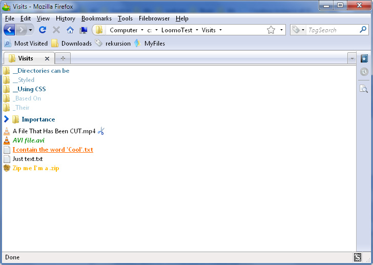

Loomo
Loomo is an open-source filebrowser extension for Mozilla Firefox hosted on github.

It implements the xfile protocol, with which it is possible to browse the local filesystem from within the Firefox tabs.
Using the xfile URL scheme makes it possible to bookmark and tag files and directories. The awesomebar can be used to open directories from the history. All Firefox extensions that enhance bookmarking and the-like can now be used for file-system related access!
Loomo Classic
There is a very old version of Loomo, “Loomo Classic”, which was reimplemented and open-sourced here in this repository on github. The old Loomo was heavily based on XPCOM and hard to maintain. Loomo Classic had many more features, which will be re-integrated into the new version step by step.
Here is what it looked like:
